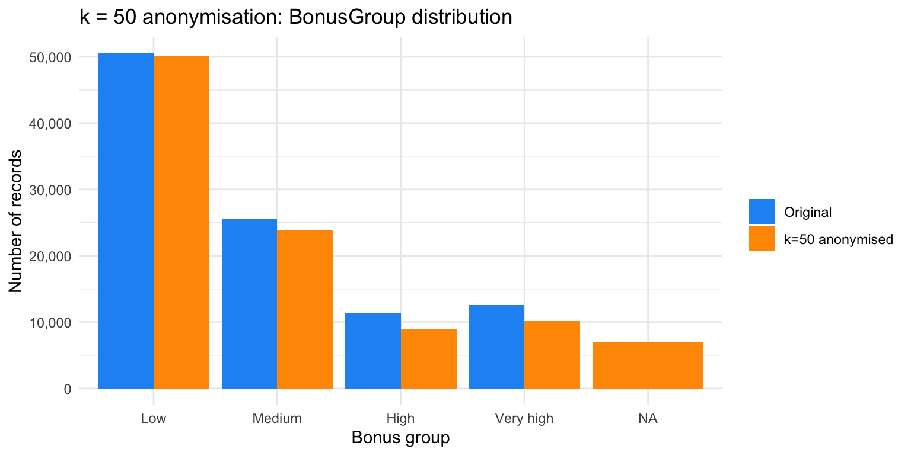

Privacy Practice
Slides — Chapter 7
Today’s roadmap
2-hour-15-minute session, hands-on, with five parts and six discussion breaks
| Time | Part |
|---|---|
| 0:00 – 0:15 | From principle to practice: the workflow, and a case study |
| 0:15 – 0:35 | Re-identification risk assessment |
| 0:35 – 0:55 | k-Anonymity |
| 0:55 – 1:05 | Break |
| 1:05 – 1:35 | Differential privacy |
| 1:35 – 2:05 | Synthetic data |
| 2:05 – 2:15 | Lifecycle controls, the case study resolved, and summary |
Learning objectives
- Conduct a privacy risk assessment covering quasi-identifiers and re-identification risk
- Apply k-anonymity and measure the utility cost
- Implement the Laplace mechanism for differentially private statistics
- Generate synthetic data and evaluate it on fidelity, utility, and privacy
- Measure the privacy–utility trade-off and match controls to lifecycle stage
Part 1 — From principle to practice
The workflow
- Identify quasi-identifiers and assess re-identification risk
- Choose a matched PET (privacy-enhancing technique): k-anonymity, DP (differential privacy), or synthetic generation
- Apply the technique
- Measure the trade-off, weighing utility loss against residual disclosure risk
- Decide whether it’s acceptable, and document the decision
Case study: three recipients, one dataset
The insurer’s data governance policy requires sign-off, following a DPIA-style risk assessment (Chapter 6), before any policy-level data leaves the organisation. Three requests have arrived at once:
- A reinsurer, pricing a treaty renewal, wants policy-level data to build its own pricing model — and already has partial background knowledge of the portfolio from prior treaty years.
- The insurer’s own pricing team, building next year’s rating model, needs realistic data, but will validate against live production data regardless.
- A benchmarking vendor, for a regulator’s market-conduct review, needs only aggregate statistics by rating factor — never a record-level file.
Same dataset, same regulatory backdrop, three different risk profiles. We’ll return to this once all three techniques have real numbers behind them.
💬 Discuss (4 min) — the case study
- Which recipient could you defensibly hand k-anonymised data to? Does the reinsurer’s partial background knowledge change your answer?
- The pricing team doesn’t strictly need real records, only realistic ones. Does that mean synthetic data, or is there a simpler, cheaper answer given they’re internal?
- The vendor only needs aggregate statistics. Does that rule out two of this chapter’s three techniques before we even start?
Don’t settle this yet. We’ll build the actual evidence, k-anonymity’s suppression pattern, DP’s noise-vs-n trade-off, synthetic data’s TSTR and NNDR results, across the next two hours, and revisit these three questions with real numbers on the “Case study, resolved” slide at the end.
The dataset and methods
Same 100,000-policy French motor dataset (pg15training) from Chapter 3, now treated as a sensitive dataset to be shared or released.
| Section | Method | Tool |
|---|---|---|
| Re-identification risk | Quasi-identifier analysis | sdcMicro |
| k-Anonymity | Generalisation & suppression | sdcMicro |
| Differential privacy | Laplace mechanism | Base R |
| Synthetic data | CART-based synthesis, evaluated on fidelity, utility, privacy | synthpop |
Part 2 — Re-identification risk
Quasi-identifiers
Not direct identifiers, but combinable to re-identify someone via external data.
- Gender narrows the group when combined
- Age band is one of the most identifying variables
- Density band is a proxy for postcode/location
- Value band narrows the pool at extremes based on vehicle value
- Bonus band narrows the pool within age group based on no-claims history
Measuring the risk
| Metric | Value |
|---|---|
| Global re-identification risk | 0.77% (large N, broad bands) |
| Expected re-identifications | 765, out of 100,000 records |
| Records with k = 1 (unique) | 6 |
| Rare combinations (k ≤ 5) | 102, highly re-identifiable |
The global number understates the real risk. A reinsurer may already know who’s in the portfolio. They only need to confirm, not identify from scratch.
The aggregation problem
Each quasi-identifier alone is innocuous:
Male → not identifying · 66+ → not identifying · Luxury vehicle → not identifying
Combined, they dramatically narrow the pool. This is Solove’s aggregation problem from Chapter 6, quantified: all records → male → male & 66+ → male, 66+, luxury → male, 66+, luxury, dense urban. The pool shrinks fast.
💬 Discuss (4 min)
Each quasi-identifier alone is harmless. Combined, they can uniquely identify someone.
Where’s the line? How many combined variables is “too risky” to release?
A way to think about it: there’s no single universal number, it depends on how rare the resulting combinations are, not how many variables are involved. That’s exactly what k-anonymity operationalises next: pick a threshold k, and treat any combination smaller than k as too risky, whatever the variable count happens to be.
Part 3 — k-Anonymity
Applying k = 50 anonymisation
sdcMicro’s local suppression, where records in groups smaller than k have their most identifying values suppressed.
|\{r' \in D : r'[Q] = r[Q]\}| \geq k
Why k = 50, not the textbook k = 5? Only 102 of 100,000 records fall below k = 5 — suppression at k=5 barely touches the dataset. k = 50 is large enough to make the trade-off visible.
The utility cost

Reading this: global risk falls 0.77% → 0.41% (about 47%). All suppression lands on BonusGroup (6.9%) and ValueGroup (0.44%) — importance always spends the cheapest variable first.
Note
Effective for small datasets or fine-grained geography. For large datasets, suppression rates are low at small k but rise quickly as k grows, as shown above. k-anonymity also cannot handle continuous variables well, and does not protect sensitive values (the claims column is untouched).
💬 Discuss (3 min)
k-anonymity doesn’t protect the sensitive column, only the ability to link a record to a person.
Is that real privacy protection, or false comfort?
A way to think about it: both, depending on what’s in the sensitive column. It closes the linkage channel, real protection, but says nothing about attribute inference within a suppressed group (if everyone in a group of 50 filed the same type of claim, k-anonymity doesn’t hide that). This exact gap is why extensions like l-diversity (Chapter 6) exist.
Break — 10 min
Part 4 — Differential privacy
The Laplace mechanism
Adds calibrated noise to a statistic before release (Dwork et al. 2006):
\mathcal{M}(D) = f(D) + \text{Lap}\!\left(\frac{\Delta f}{\varepsilon}\right)
Smaller \varepsilon → more noise → stronger privacy, less utility.
Noise depends on group size, not just \varepsilon

Reading this: whole portfolio (n=100,000) noise is invisibly small at every \varepsilon. The same mechanism, same \varepsilon, on the n=487 rare subgroup from Part 2, swings multiple years at \varepsilon=0.1.
Sensitivity scales as 1/n. A portfolio-wide statistic is nearly free to protect with DP; a fine-grained breakdown is not.
Interpreting epsilon
| ε | Whole portfolio (n=100,000) | Rare subgroup (n=487) | Interpretation |
|---|---|---|---|
| 0.1 | Negligible | Very large (multi-year) | Strong privacy; fine for portfolio stats, unusable for small groups |
| 0.5–1 | Negligible | Large–moderate | Common default for aggregates |
| 5 | Negligible | Small | Acceptable even for moderately small groups |
| 10 | Negligible | Very small | Weak privacy, close to raw output |
💬 Discuss (4 min)
Setting epsilon for your organisation’s next public data release.
ε = 0.5 (strong privacy, noisy) or ε = 5 (weaker privacy, useful)? What decides it?
A way to think about it: it depends on n more than on any fixed rule. For a portfolio-wide statistic like this chapter’s examples, \varepsilon=0.5 already costs almost nothing, so there’s little reason to accept the weaker guarantee of \varepsilon=5. The trade-off only starts to bite once the statistic is computed over a small group.
Part 5 — Synthetic data
Desired properties of synthetic data
Synthetic data generators are judged on three properties, which do not automatically move together (Jordon et al. 2022):
- Fidelity — does the synthetic distribution resemble the real one, marginally and jointly?
- Utility — does it actually support the downstream task, not just look similar?
- Privacy — does releasing it leak information about specific real individuals?
A generator that memorised the training data scores perfectly on fidelity and utility, and fails privacy completely. The checks that follow test all three, in that order.
Generating with synthpop
Fits a sequence of conditional models, one variable at a time (CART by default), sampling new synthetic records from the fitted sequence, not resampling real ones.
Fidelity: marginal distributions

Synthetic distributions closely track the real ones for Age, Density, and Value.
Evaluating utility: TSTR
Train-synthetic-test-real: fit a model on synthetic data, evaluate it on real records synthesis never saw. This tests the thing a downstream user actually does with the data, not just resemblance.
| Model trained on | AUC on 2,000-record real holdout |
|---|---|
| Real data | 0.728 |
| Synthetic data | 0.729 |
A negligible, even reversed, gap. A model built entirely on synthetic data performs just as well on real future business as one built on the real data it was meant to protect.
Evaluating privacy: NNDR

\text{NNDR} = \frac{d(\text{syn}_i, \text{real nearest})}{d(\text{syn}_i, \text{real 2nd nearest})}
Near 1 = not a copy. Near 0 = memorisation risk.
There is a real spike near 0: ~4% of sampled records (20 of 500) exactly match a real record on Age/Density/Value. Not memorisation — Density has only 471 distinct values in 8,000 records, so CART’s leaf-resampling can coincidentally reproduce one real combination. The categorical columns (Group1, Bonus) still typically differ.
Important
NNDR on numeric columns is only one test. A complete evaluation also checks membership inference (can an attacker tell whether a specific record was used to train the model?) and attribute inference (can an attacker guess a sensitive field about someone from the synthetic data?) (Jordon et al. 2022).
💬 Discuss (4 min)
NNDR near 1 says most synthetic records aren’t copies of real ones — but a small share are exact matches on the numeric columns checked.
Does that change whether the dataset is safe to release? What else would you want to check?
A way to think about it: not an automatic block, but not an all-clear either. A 4% exact-match rate on the checked variables means membership-inference testing should happen before release, not that release should be blocked outright — the same “additional testing needed” conclusion the callout below reaches.
Wrap-up
Controls by lifecycle stage
| Stage | Key controls |
|---|---|
| Collection | Minimum necessary, document legal basis |
| Storage | Pseudonymise, encrypt, role-based access |
| Analytics | Purpose limitation, k-anonymise/DP before analyst access |
| Output/sharing | Aggregate only, DP noise, data-sharing agreements |
| Retention | Automated deletion, secure disposal |
Case study, resolved: answering the three questions
- Which recipient could get k-anonymised data? Arguably none — wrong tool for all three requests, not a flaw in k-anonymity itself. Where it would otherwise apply, the reinsurer’s background knowledge weakens it further: this chapter’s own k=50 result left
Gender/AgeGroup/DensityGroupuntouched, exactly what a repeat treaty partner might already know. - Does the pricing team need synthetic data? No — the simpler answer is governance only: purpose limitation and role-based access. They’re internal, already trusted, and validated against live production regardless of training data.
- Does the vendor’s aggregate-only need rule out two techniques? Yes. k-anonymity and synthetic data both protect files; the vendor never receives one. Differential privacy is the only relevant technique of the three.
In short: reinsurer → synthetic data (TSTR: AUC 0.728 vs 0.729). Internal team → governance alone. Vendor → differential privacy. Three recipients, three different tools.
💬 Discuss (5 min) — wrap-up
Looking at the lifecycle-controls table, and the case study resolution above.
Which stage — or which recipient-matching decision — does an organisation you know handle worst?
Summary
- Re-identification risk is real even in large “anonymised” datasets
- k-anonymity: reduces identifiability, doesn’t protect sensitive values, loses utility once k is large enough to matter
- Differential privacy: mathematical guarantee, scales well with n — the same \varepsilon costs far more for a small subgroup than a large portfolio
- Synthetic data (
synthpop/CART): evaluated on fidelity, utility (TSTR), and privacy (NNDR) — good on all three here, with a genuine, explainable minority-match caveat - No single technique is sufficient alone, and no single technique fits every recipient — layered, recipient-matched controls are required
Recommended reading
Next class
Chapter 8 — Trade-offs, Integration, and Governance
Bring one open question from Chapters 1–7 you’d like the course to tie together.